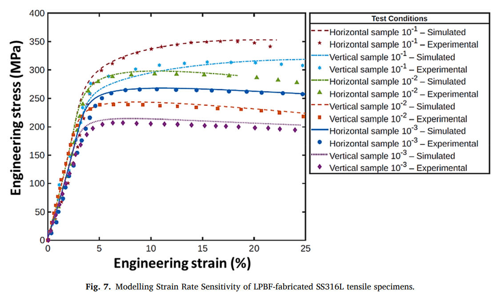

Research
My research is multiscale. The two threads below run from the microstructure of the material up to the behaviour of the component it ends up in.
Creep–fatigue interaction in turbine blades made of nickel superalloys
Turbine blades fail where creep and fatigue act together. A dislocation density-based crystal plasticity model, implemented in MOOSE, is used to identify where that damage accumulates and to predict the remaining life of the blade. The model is validated first at the representative volume element (RVE) level and then applied at the component scale.


High-temperature plasticity of LPBF 316L stainless steel
How laser powder bed fusion (LPBF) 316L behaves once it is taken to temperature, and how much of that behaviour is inherited from the way it was printed.
- High-temperature deformation. Systematic investigation of the mechanical behaviour of LPBF-fabricated 316L stainless steel at an elevated temperature of 850 °C.
- Anisotropy and build orientation. Uniaxial tensile response compared along vertical (parallel to build) and horizontal (perpendicular to build) orientations, to isolate the effect of build direction on mechanical performance.
- Strain-rate sensitivity. Response across multiple strain rates, revealing a transition from strain softening at lower rates to strain hardening at higher rates.
- Microstructural mechanisms. Deformation shifts from dislocation slip and twinning at room temperature to dynamic recrystallisation at elevated temperature.


